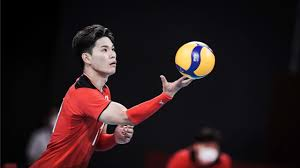

Servis merupakan teknik dasar yang digunakan ketika memulai pertandingan. Secara umum, servis bisa dilakukan dengan dua cara, yakni servis atas dan servis bawah. Servis atas dilakukan dengan cara melambungkan bola ke atas, baru kemudian memukulnya dengan tangan yang mengayun dari bawah ke atas. Sedangkan servis bawah dilakukan dengan melemparkan bola ke atas dan memukulnya dengan tangan yang mengayun dari depan ke belakang.
Passing merupakan teknik bola voli yang digunakan untuk mengoper bola kepada teman satu tim. Passing bisa dilakukan dengan dua cara, yakni passing atas dan passing bawah. Passing atas dilakukan dengan melambungkan bola ke atas dan memukulnya dengan kedua telapak tangan yang terbuka. Sedangkan passing bawah dilakukan dengan memukul bola dengan kedua telapak tangan yang terbuka dan saling berdekatan.
Smash termasuk teknik dasar attacking dalam permainan bola voli. Jadi, smash adalah teknik serangan atau pukulan bola di udara sambil meloncat. Pukulan ini dilakukan dengan keras dan menukik ke area lawan.
Teknik dasar yang terakhir adalah blocking yang bertujuan untuk mencegah agar bola tidak masuk ke area tim sendiri. Hal yang perlu diperhatikan saat melakukan blocking adalah posisi tubuh, ketepatan waktu, dan juga ketahanan tubuh.
